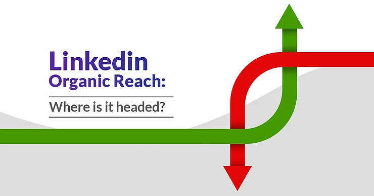
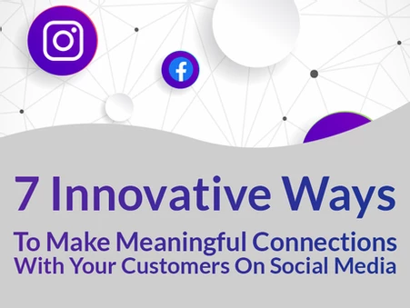
7 Innovative Ways To Make Meaningful Connections With Your Customers
On Social Media
We are surrounded by technology so much that we crave for actual
communication with authentic people. We go on a website and we see a
bot trying to interact with us. We type a reply on LinkedIn and we
see AI giving us suggestions....

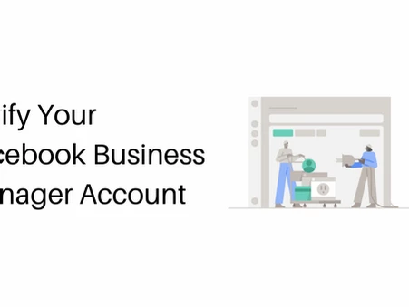
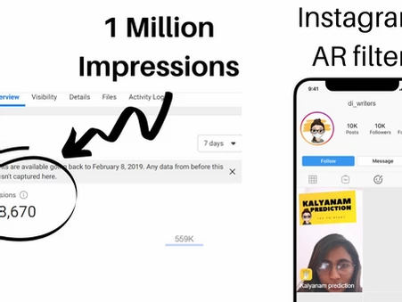
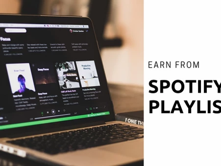
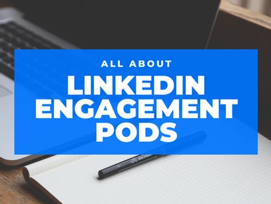
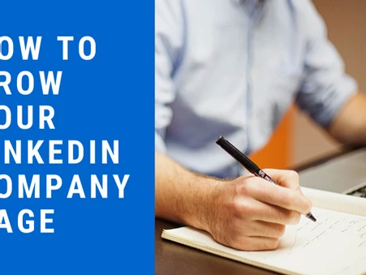
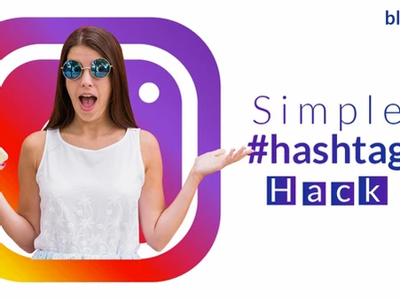
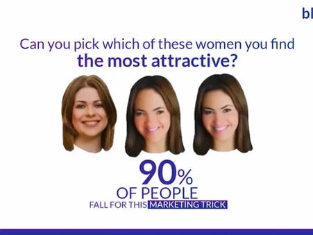
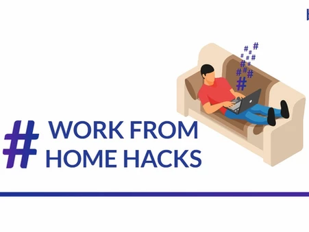
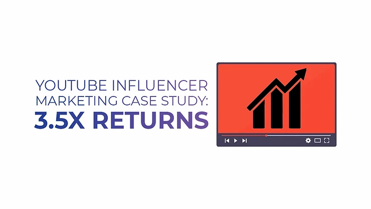
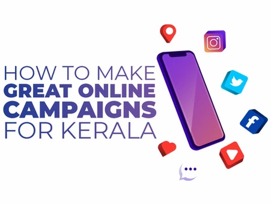
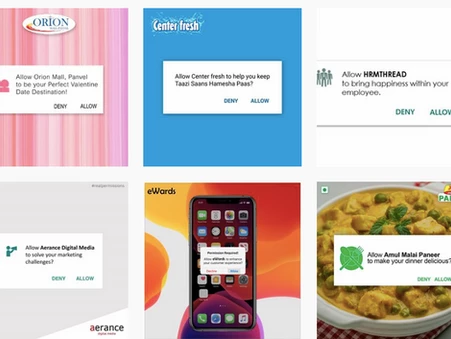
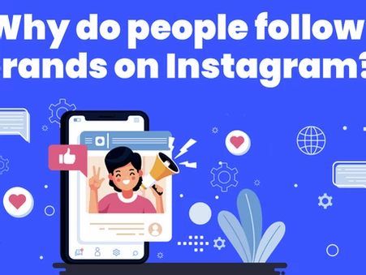
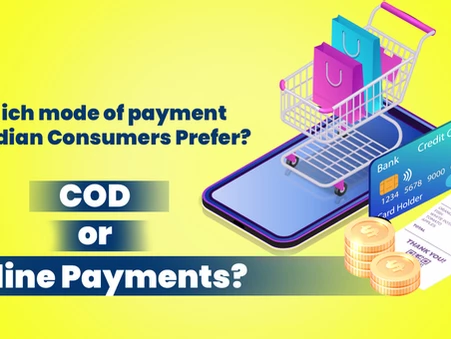
Which mode of payment do Indian Consumers Prefer? COD or Online
Payments? : E-commerce Survey 2020
The most challenging factor that we face while doing an ecommerce
campaign is to push ads and the campaign for online purchases or for
Cash on delivery purchases. In our experience, Cash On Delivery is
still the most used payment...
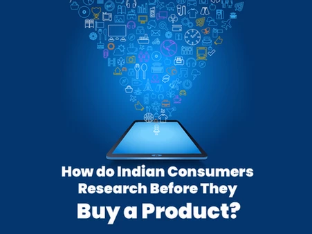
How do Indian Consumers Research Before They Buy a Product? -
Ecommerce Survey 2020
Before statergising for marketing your product which you're selling
online, it is a must that you have an understanding of how Indian
users will be researching about your product. Whether they will be
researching on their own in Google...
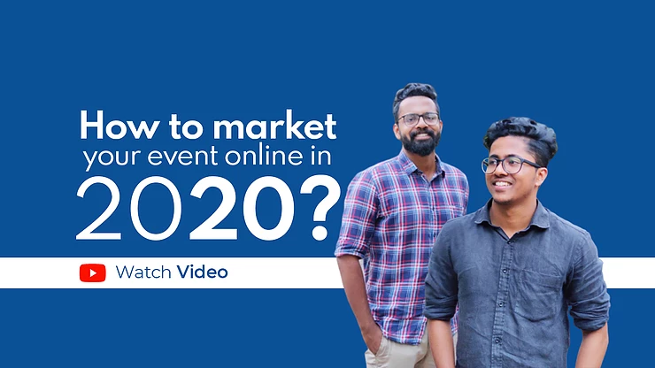
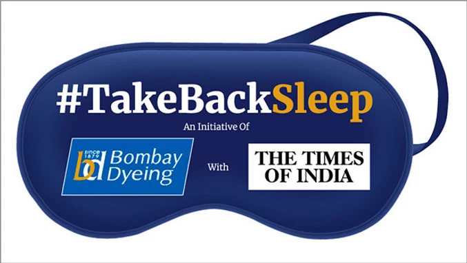

10 Golden Rules of Advertising That I learned From the 'Father of
Advertising' - David Ogilvy.
As I run an online marketing agency, I have been on the lookout for
a good book to learn some new principles of advertisements so that I
can start applying it for our clients. Then I came across David
Ogilvy, founder of Ogilvy & Mather....
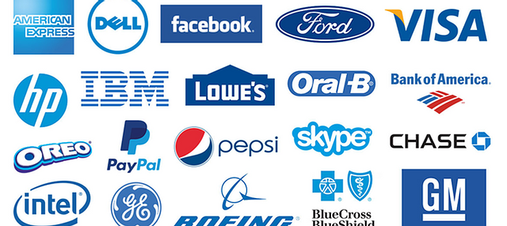
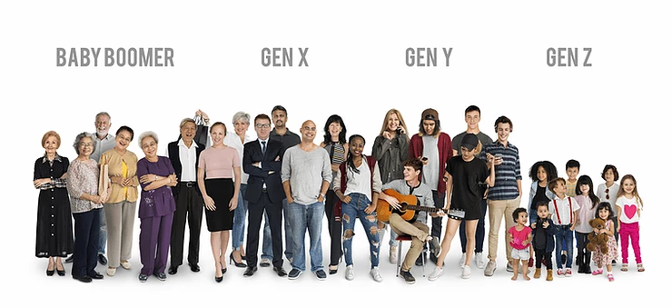

Why Byju's Indian Cricket Team Jersey Sponsorship Could Turn Out to
be a Great Marketing Deal
It was all over the business news, on social media and in any
platforms where marketing could be critiqued. I have read both the
sides of the arguments with a pre-judged notion in my mind, and I'm
pointing out some of the....
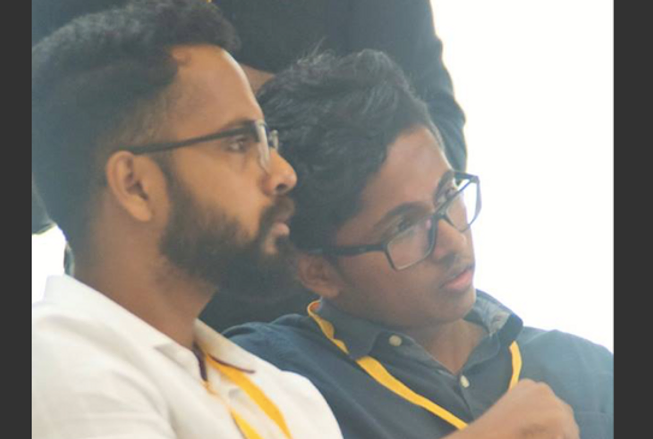
How Blusteak Media clocked 5 million revenue; Plans to Become 360°
Digital Marketing Agency.
From our childhood, me and my brother always had a dream about
making a mark in the world, and to pursue our dreams so that we can
influence the lives of many. But, we had no idea, our mind was blank
except for the urge....
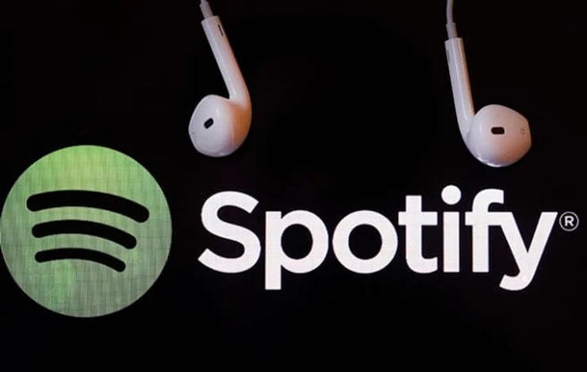
How We Got 50 Thousand Users Within A Month – The Dudeapp Story
By the time Facebook became a thing in India and Orkut became
history, even though we had no internet connection in our homes, we
would go to the nearest cafe to surf through the net, and especially
really enjoy all the internet “memes” thoroughly. Inspired by many
of the much loved meme/troll pages in Facebook, we decided to start
one of our.....